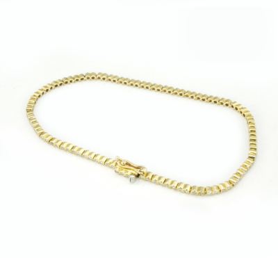
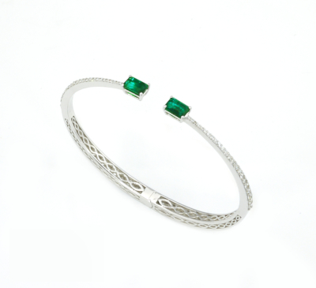
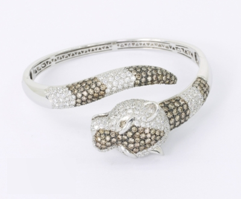
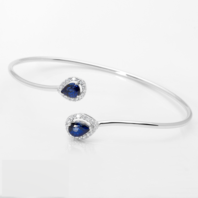
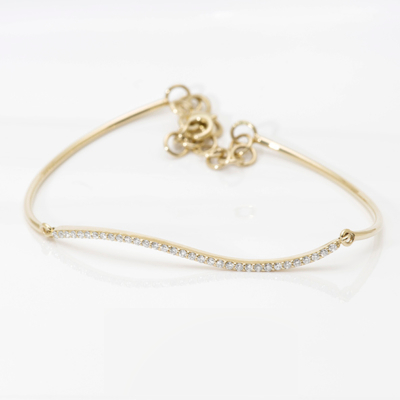
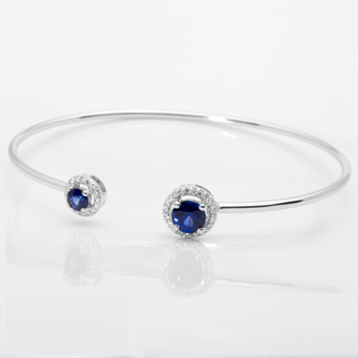
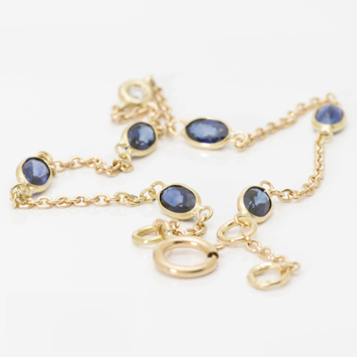
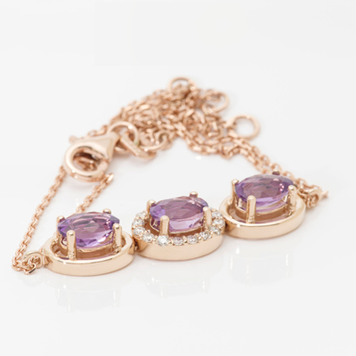
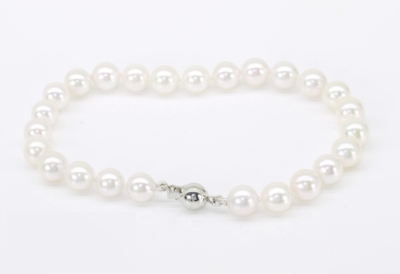
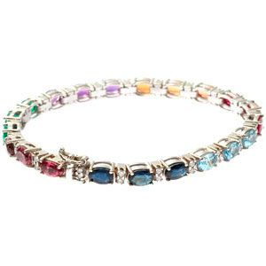

|  |  |  |  |  |
| Sárga Arany Gyémánt Tenisz Karkötő anyag: sárga arany, finomság: 585 (14k), tömeg: 4,8g, szélesség: 1,8mm, hossz: 18cm, drágakő: Gyémánt (valódi, természetes) össz. tömeg: 0,55ct, csiszolás: briliáns, tisztaság: VS1, szín: H / Wesselton / fehér cikkszám: 0023 ár: 540.000 Ft | Fehérarany Gyémánt Smaragd Karkötő Két smaragd csiszolású smaragd jelzi a karkötő össze nem érő végeit, melyeket briliáns gyémántok öveznek. anyag: fehérarany, finomság: 585 (14k), tömeg: 11,63g, belső méret 56,7×44,2mm, drágakő: Smaragd (valódi, természetes), tömeg: 0,85ct, csiszolás: smaragd, tisztaság: MI-HI (közepesen zárványos),szín: fűzöld, drágakő: Gyémánt, össz. tömeg: 0,67ct, csiszolás: briliáns, tisztaság: VS1, szín: H / Wesselton /fehér cikkszám:0024 ár: 1.498.000 Ft | Diamond Panther Konyak és Fehér Gyémánt Karperec, A karperecet díszítő briliáns gyémántok össztömege 8,45 karát, mely fehér és konyak színű gyémánt drágakövekből áll össze. anyag: fehérarany, finomság: 750 (18k), tömeg: 37,67g -belső méret: 59,3×46,5mm, fej szélesség: 19,6mm, gyémánt össz. tömeg: 8,54ct, fehér gyémánt drágakő: Gyémánt, össz. tömeg: 4,49ct, csiszolás: briliáns, tisztaság: SI1-I2 szín: H-I, konyak gyémánt drágakő: Gyémánt, össz. tömeg: 4,05ct, csiszolás: briliáns, tisztaság: SI1-I2, szín: konyak cikkszám: 0025 ár: 6 770 000 Ft Ft | Fehérarany Gyémánt Zafír Karkötő Össze nem érő, egymástól elhajló karkötővégek egy-egy csepp alakú sötétkék zafírral.anyag: fehérarany, finomság: 585 (14k), tömeg: 5,34g, belső méret 55x44mm, drágakő: Zafír tömeg: 1,08ct, csiszolás: csepp, tisztaság: LI (enyhén zárványos), szín: kék, kezelés: diffúz hőkezelt, drágakő: Gyémánt, össz. tömeg: 0,17ct, csiszolás: briliáns, tisztaság: VS1 szín: H / Wesselton / fehér cikkszám: 0026 ár: 452 400 Ft 154.990 Ft | Sárga Arany Gyémánt Karkötő, cikkszám: 00027 anyag: sárga arany, finomság: 585 (14k), tömeg: 3,3g, hossz: 14-17cm, drágakő: Gyémánt, össz. tömeg: 0,18ct, csiszolás: briliáns, tisztaság: VSI1, szín: H, cikkszám: 0027 ár: 238 800 Ft |
|  |  |  |  |  |
| Fehérarany Gyémánt Zafír Karkötő A kerek formák jegyében készült ez a karkötő, melynek össze nem érő végeit két kerek sötétkék zafír díszíti. anyag: fehérarany, finomság: 585 (14k), tömeg: 4,97g, belső méret 55x44mm, drágakő: Zafír tömeg: 0,76ct, csiszolás: kerek, tisztaság: LI (enyhén zárványos), szín: kék, kezelés: diffúz hőkezelt, drágakő: Gyémánt, össz. tömeg: 0,12ct, csiszolás: briliáns, tisztaság: VS1 szín: H / Wesselton / fehér Blue cikkszám: 0028 ár: 357 600 Ft | Sárga Arany Zafír Karkötő hat ovális sötétkék zafír drágakővel és egy briliáns gyémánttal anyag: sárga arany, finomság: 750 (18k), tömeg: 1,64g, hossz.: 17-18cm, drágakő: Zafír, tömeg: 1,94ct, csiszolás: ovális, tisztaság: LI (enyhén zárványos), szín: kék, kezelés: diffúz, hőkezelt, drágakő: Gyémánt, össz. tömeg: 0,03ct, csiszolás: briliáns, tisztaság: VS1 (tiszta, jó minőségű), szín: H / Wesselton / fehér 190 800 Ft cikkszám: 0029, ár: 190 800 FtFt | Rozé Arany Gyémánt Ametiszt Karkötő, Romantikus ametiszt karkötő gyémántokkal, anyag: rozé arany, finomság: 585 (14k), tömeg: 3,54g, fej méret: 27,7×7,6mm, drágakő: Ametiszt (valódi, természetes), tömeg: 3,54gct, csiszolás: ovális chekboard, tisztaság: LI (enyhén zárványos), szín: világoslila, drágakő: Gyémánt (valódi, természetes), össz. tömeg: 0,15ct, csiszolás: briliáns, tisztaság: VS1 (tiszta, jó minőségű), szín: H / Wesselton / fehér cikkszám: 0030 ár: 267 600 Ft | Sósvízi Fehér Akoya Gyöngy Karkötő Fehérarany Gömbzárral Megfelelő menyasszonyi ékszert keresel? Egy gyöngysor vagy egy gyöngy karkötő tökéletes választás lesz. anyaga: fehérarany, finomság: 585 (14k), Gyöngysor: -drágakő: valódi, tenyésztett, sósvízi Akoya gyöngy, tömeg: 11,75g, gyöngysor hosszúság: 20cm, csomózás: egyesével kézzel csomózott, darabszám: 20 szem, méret: ~6,6-6,8mm, forma: gömb, szín: fehér, lüszter: kiváló, felület minőség: nagyon enyhén tagolt, kis völgyekkel cikkszám: 0031 ár: 326 400 Ft | Gyémánt karkötő, smaragd-zafír és egyéb színes drágakövek A gyémánt karkötő kézimunkával készített drágaköves ékszer, fehér aranyból. Az ár 1 db kb 18,6 gr súlyú, 18K aranyból készült, 0,75 ct G/VS briliáns csiszolású gyémántot, zafírt, rubint, smaragdot, ametisztet, aquamarint, turmalint tartalmaz. Az ár tájékoztató jellegű , kövek minőségétől napi árfolyamoktól függ. cikkszám:0032 ár: 2.095.000 Ft Ft |